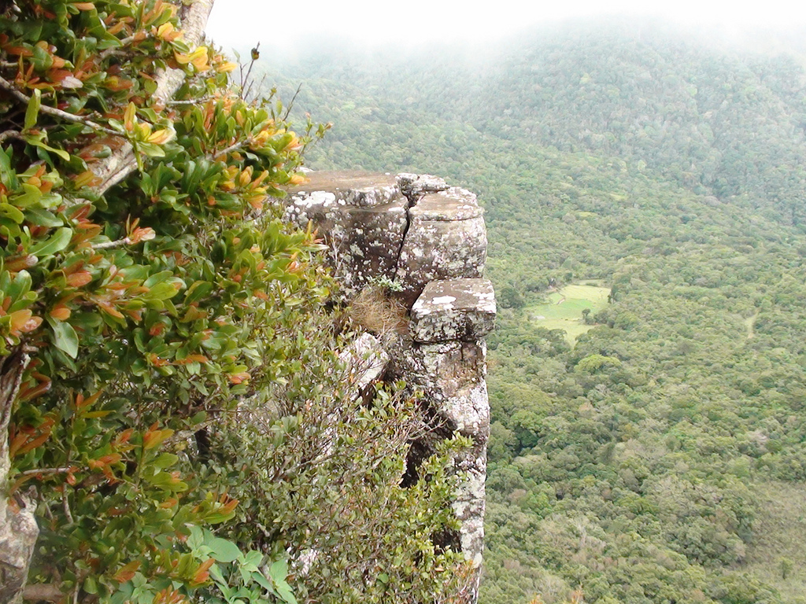
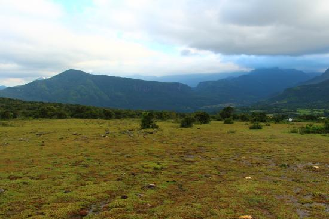

Mathale
Riverston
.jpg)
The Riverston Peak in Sri Lanka can be reached by travelling, about 30km away from the Matale town, down the Matale – Girandurukotte Road. This secretive windy road, with its sharp hairpin turns, offers some of the best views to the surrounding countryside; to the extent that it is called the Mini World’s End. Though it is very popular among locals, the area is comparatively unknown amongst mainstream tourists. Therefore the area offers up the natural beauty of Sri Lanka; fresh, green and unpolluted by vendors, tourists, garbage and unsightly buildings.
With climates very similar to the Hortons Plains, where the World’s End is located, Riverston trek also offers two graceful waterfalls Sera Ella and Bambarakiri Ella. Sera Ella also has some conveniently located rock seats from which a visitor can enjoy the refreshing cold spray of misty droplets. The nearby freshwater river, Thelgamu Oya, can be used for quick cooling dip or even just a refreshing splash before or after a long arduous trek. The trek is about two and a half kilometres one way, and shouldn’t take more than a healthy hour or two at most. It runs a section known as the Pittawala Paththana and leads to the Riverston Peak. The countryside along the trek has views of the terraced paddy fields, unique to some mountainous regions around the world, and that of the beautiful green Central Highlands. 
Punchi Lokanthaya
Visited Riverstone Plains ('Pitawala Pathana' in Sinhalese) with friends as a day outing. It lies adjacent to the famous Knuckles Mountain Range and can be accessed via Matale or the Dambulla - Bakamoona road. The road gets narrow and winding when you start climbing up. The sudden elevation in altitude brings you to a completely different climatic habitat and a mountainous terrain with plenty of fresh and cool air. The plains takes you to the edge of a cliff with a sudden and drastic drop at its distal end, somewhat similar to what travellers encounter at the famous "World's End" ("lokanthaya") at the Horton Plains, but on a lesser scale. The drop is aptly named "little world's end" ('Punchi Lokanthaya'). You could park the vehicles at the start of the plains and could follow a marked trail along the terrain to its edge. Depending on the weather and mountain mist, visibility could be limited. It takes about 20 minutes to reach the egde (need to be careful) and the scenary would be simply breath-taking. After coming back to the vehicles, you could also continue with further upward journey to reach the summit of the mountain range. However, vehicles are not allowed in the last 3 Km (2 mile) distance of the road hence you have to negotiate the distance on foot. The climb would take another 45 minutes which could be a bit tiring. At the top, there is a telecommunication tower rising a further couple of hundred feet and a station complex transmitting mobile phone and railway communication signals. You could exchange a few pleasentaries with the staff manning the complex as they yearn for company! At this point, the summit stands at 4,800 feet above mean sea level and you feel as if you are standing "on top of the world" with almost all the other mountain peaks dwarfing beneath you. There is just one adjoining mountain peak rising a further 200 feet with a foot path to its top. For the more adventurous types, it would be worth the trouble to scale it. And for us, after our trek down to the vehicles and then half way on to our descent, we stopped by a mountain stream used by many hikers to have a bath. The cool dip was very refreshing and enjoyable after the tiresome trek. You could also have meals by the side of the stream, but please do not litter. For the more enthusiastic traveller, you could book a mountain lodge through the forest department and spend the night in the plains enjoying the unique stillness and the beauty of the mounternous wilderness. Pitawala Pathana
Pitawala Pathana is a unique grassland of pathana type found in the Knuckles Conservation Forest, Sri Lanka. This patana has a great ecological value. In Pitawala Pathana a grass cover spreads over an area of about 10 ha of a gently sloping rock slab covered with just a thin soil layer. The turf grass of about 10 cm in height gives a velvety appearance to this sloping expanse of grassland. Isolated and scattered trees and shrubs could be seen. Many endemic plant and animal species are found.